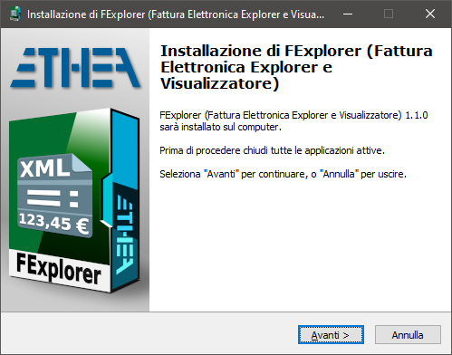
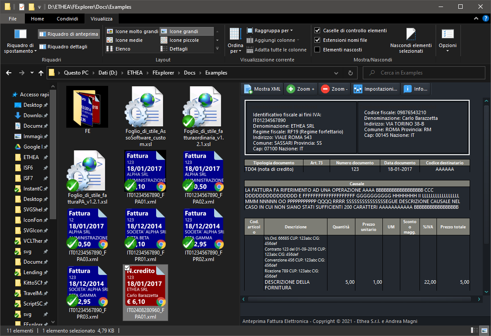
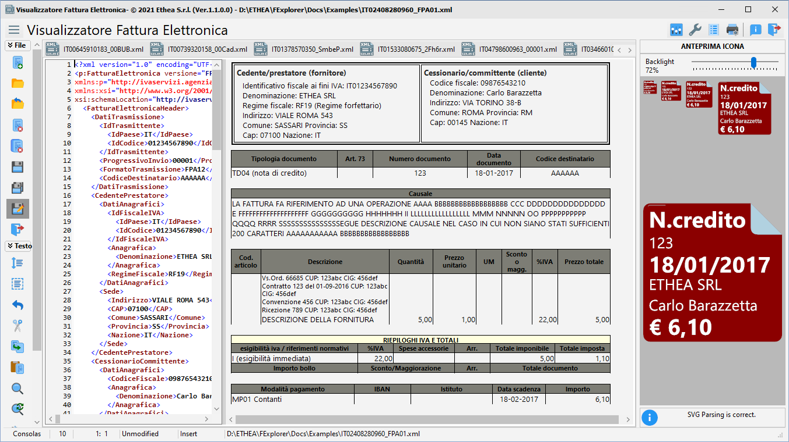

FExplorer (Fattura Elettronica in Windows Explorer) 
Anteprima Fattura Elettronica (Viewer e Icone) integrato in Windows Explorer e Visualizzatore
Versione attuale 2.4.2 del 3 Novembre 2026
Una serie di strumenti per gestire i file xml contenenti Fatture Elettroniche in Windows:
-
Un Preview handler che permette di vedere una anteprima della Fattura Elettronica nel “Pannello Anteprima” di Windows Explorer.
-
Un Thumbnail handler che permette di vedere l'anteprina delle F.E. come icone dentro Windows Explorer
-
Un Visualizzatore di F.E. che permette di visualizzarla in formati diversi e stamparla
Funzionalità
- Possibilità di scegliere lo stile di visualizzazione della fattura (PA, AssoSoftware, Custom…)
- Possibilità di associare colori diversi alle icone in base ai tipi di F.E. o ad altre regole
- Supporta Windows Vista, 7, 8 and 10 (sia 32 bit che 64 bit).
- Supporto dei temi (Scuro o Chiaro) in accordo con le preferenze dell'utente in Windows
- Supporto ai file firmati digitalmente (p7m) grazie alla libreria PKCS7Extractor
Installazione semplice
Clicca per scaricare il Setup: FExplorerSetup.exe (che si trova anche nella “release area”).

INFO: il setup è firmato con certificato!
Pannello Preview e Anteprima Icone in azione
Con Windows 10 e tema scuro:

Visualizzatore della Fattura Elettronica
Un comodo visualizzatore della fattura elettronica per poterla anche stampare.

Build e Installazione manuale (per sviluppatori Delphi)
Se hai Delphi 11 o Delphi 12, puoi compilare manualmente il progetto.
Compilazione/Installazione packages di componenti di terze parti
Utilizzare il file {FExplorer}\Ext\AllPackagesGroup.groupproj per caricare nell'IDE tutti i package da compilare e installare
Utilizzare il file {FExplorer}\Source\FExplorerGroup.groupproj per caricare nell'IDE i 2 progetti da compilare
Per installare manualmente FExplorer.dll seguire questi step:
-
Chiudere tutte le istanze di Windows Explorer in cui è attivo il gestore di anteprima o è stato utilizzato il gestore di anteprima (ricorda che la dll rimane in memoria fino alla chiusura di Windows Explorer).
-
Se hai già utilizzato il programma di installazione, disinstallare i componenti dal sistema.
-
Per installare manualmente la dll modificare opportunamente il file Setup \ Register64bit.bat ed eseguirlo (run-as-administrator).
-
Se si desidera disinstallare la dll, modificare opportunamente il file Setup \ UnRegister64Bit.bat` ed eseguirlo.
-
Una volta registrato, puoi continuare a modificare il codice e ricompilare la dll (attenzione a chiudere tutte le istanze di Explorer ogni volta che si ricompila).
Release Notes
3 Novembre 2026 - Versione 2.4.2
30 Ottobre 2026 - Versione 2.4.1
- Editor: nel menu contestuale le voci “A capo automatico” e “Mostra numeri di riga”, con il segno di spunta: valgono per tutti gli editor aperti e vengono salvate con le altre opzioni dell'editor
- Visualizzatore: la larghezza del menu laterale compresso dipende dall'altezza del menu, così non compare più la barra di scorrimento verticale con il menu stretto
- Setup: nessuna scelta della lingua, l'installazione usa la lingua di Windows
- Licenze e crediti: lo stesso elenco delle librerie di terze parti nel setup, nel README e nella finestra Informazioni
- Nuovi logo, scatola e immagine del wizard di setup
- Copyright aggiornato al 2026; progetti compilabili anche con l'IDE a 64 bit di Delphi 12
- Usa StyledComponents 4.5.0
28 Febbraio 2025 - Versione 2.4.0
- Aggiunta opzione “A capo automatico” per l'editor (attiva di default)
- Aggiornato componente “Editor”
30 mag 2024 - Versione 2.3.1
- Fix visualizzazione colonna cod. Articolo
- Fix encoding lettere accentate
29 mag 2024 - Versione 2.3.0
- Finestre con bordo ombreggiato
- Fogli di stile AssoSoftware e PA aggiornati
- Corretto Layout per mancanza codice articolo
- Aggiunta gestione pulsanti arrotondati
- Aggiunte Dialog moderne con animazioni
- Compilato con Delphi 12.1
12 Set 2023 - Versione 2.2.0
- Aggiornati fogli di stile Assosoftware e PA
- Build con Delphi 12
- Rimosso engine TSVG
- Aggiunto pulsante di chiusura sui Tab
- Aggiunto supporto a Delphi 12
23 Nov 2022 - Versione 2.1.0
- Aggiunto “Stile” SudTirolo (ITA/DEU)16
- Aggiunta possibilità di spegnere pannello anteprima icona e testo XML nel Viewer
11 Sep 2022 - Versione 2.0.0
- Build con Delphi 11.2 Alexandria
- Fixato errore in caricamento file con spazi
08 Ago 2022 - Versione 1.9.0
- Build con Delphi 11.1 Alexandria
- Fix apertura file con estensioni in maiuscolo
- Aggiornate librerie HTMLViewer, SynPDF, SVGIconImageList e Image32
23 Ott 2021 - Versione 1.8.0
- Aggiunti nuovi stili Windows 11
03 Set 2021 - Versione 1.7.0
- Aggiunto supporto Delphi 11
- Build con Delphi 11
23 Lug 2021 - Versione 1.6.0
- Aggiunto supporto SVG con engine Image32
05 Lug 2021 - Versione 1.5.0
- Aggiunto supporto drag/drop files da Exporer al viewer/editor
- Setup firmato con certificato
22 Giu 2021 - Versione 1.4.0
- Aggiunto supporto ai file encodati BASE64 con la libreria PKCS7Extractor
- Aggiunta la stampa in PDF della fattura basata sul template HTML
- Migliorato il template Assosoftware Custom per la visualizzazione
- Fixati problemi con caricamento XML con BOM
- Aggiunta pagina layout PDF in Settings
11 Giu 2021 - Versione 1.3.0
- Aggiunto supporto ai file firmati (p7m) con la libreria PKCS7Extractor
30 Apr 2021 - Versione 1.2.0
- Aggiunto supporto FExplorer a 32 Bit
23 Apr 2021 - Versione 1.1.0
Thumbnails:
- preview anche delle fatture elettroniche semplificate
- preview di una generica icona XML per i file che non sono fatture
FExplorer:
- default apertura file “read-only”
- Settings:
- possibilità di abilitare l'editing dei file
- possibilità di caricare anche file xsl
- auto-riconoscimento xsl di trasformazione fatture*
- auto-riconoscimento xsl di trasformazioni icone svg*
*queste due funzioni permettono di utilizzare l'editor per testare nuovi stili di trasformazione di fatture e di icone
Bug-fixing:
- impostazione stampante (AV in apertura)
- preview di stampa corretta
- alcuni messaggi in inglese
14 Apr 2021 - Versione 1.0.0
26 Mar 2021 - Creazione Repo
Credits
Grazie a ** Rodrigo Ruz V. ** (autore di theroadtodelphi.com Blog) per il suo ottimolavoro su delphi-preview-handler da cui questo progetto ha usato codice e ispirazione.
Grazie a ** Carlo Barazzetta ** per il suo ottimo lavoro su SvgShellExtensions da cui questo progetto ha usato molto codice e ispirazione.
Grazie ad ** Andrea Magni ** che ha collaborato alla realizzazione di questo progetto.
Licenza
Rilasciato sotto licenza Apache License, Version 2.0 (the “License”);
A meno che non sia richiesto dalla legge applicabile o concordato per iscritto, il software distribuito in base alla Licenza è distribuito “COSÌ COM'È”, SENZA GARANZIE O CONDIZIONI DI ALCUN TIPO, esplicite o implicite. Vedere la Licenza per la lingua specifica che regola le autorizzazioni e le limitazioni ai sensi della Licenza.
Copyright © 2021-2026 Ethea S.r.l.
Crediti
Autori: Carlo Barazzetta, Andrea Magni
Sorgenti del progetto: https://github.com/EtheaDev/FExplorer
Altre librerie di Ethea
Librerie di terze parti
- Delphi Preview Handler
The Initial Developer of the Original Code is Rodrigo Ruz V.
Portions created by Rodrigo Ruz V. are Copyright © 2011-2023 Rodrigo Ruz V.
- VCL Styles Utils
Portions created by Rodrigo Ruz V. are Copyright © 2012-2023 Rodrigo Ruz V. (Mozilla Public License 1.1)
- SynEdit (PyScripter fork)
Portions created by Martin Waldenburg are Copyright © 1998 Martin Waldenburg (Mozilla Public License 1.1)
- Skia4Delphi
Copyright © 2021-2025 Skia4Delphi Project (MIT License)
- Image32 Library
Copyright © 2019-2025 Angus Johnson (Boost Software License)
- OpenSSL Library: Cryptography and SSL/TLS Toolkit
Copyright © 1998-2018 The OpenSSL Project. All rights reserved.
- Synopse/SynPDF
Copyright © Synopse: all rights reserved.
- HtmlToPdf
Copyright © Muzio Valerio.
- HTMLViewer
Copyright (c) 1995 - 2008 by L. David Baldwin
Copyright (c) 1995 - 2023 by Anders Melander (DitherUnit.pas)
Copyright (c) 1995 - 2023 by Ron Collins (HtmlGif1.pas)
Copyright (c) 2008 - 2009 by Sebastian Zierer (Delphi 2009 Port)
Copyright (c) 2008 - 2010 by Arvid Winkelsdorf (Fixes)
Copyright (c) 2009 - 2023 by HtmlViewer Team
- PKCS7Extractor
Copyright © 2018 Delphi Club Italia (GNU LGPL v3)
Original authors: Christian Cristofori, Giancarlo Oneglio
- StyleSheet FatturaPA in South-Tyrol
Copyright © 2017 Ferdinand Tavernini
Related links: embarcadero.com - learndelphi.org